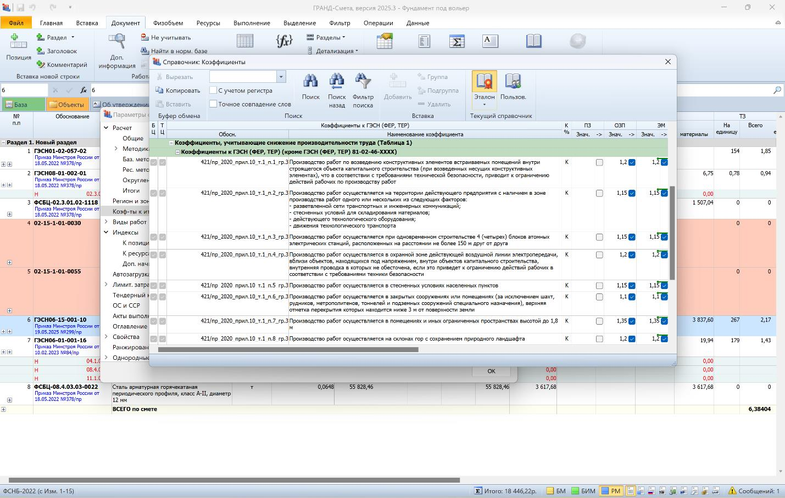
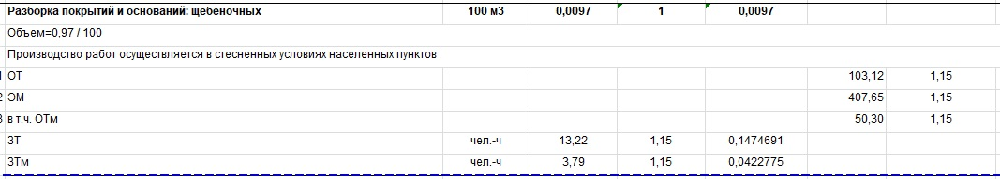

Коэффициенты, отражающие условия производства работ

Сметные нормы учитывают стандартные технологии в строительстве, рассчитанные на обычные условия и положительную температуру воздуха — как внутри зданий, так и снаружи.
Если в проектной документации указаны сложные условия производства работ, применяют специальные коэффициенты из приложения № 10 к Приказу № 421/пр. Эти поправки отражают влияние особенностей (например, влажный грунт, круглые стены, холодный климат) на выполнение работ.
Главная задача коэффициентов — скорректировать сметные расчёты под реальные условия на стройке. Например, при строительстве в холодном климате вводится повышающий коэффициент для зимнего периода — это помогает подрядчику не понести убытки из-за дополнительных затрат.

Если в документе-основании для сметы не указаны условия работы, настаивайте на их обязательном внесении. Без этого применение коэффициентов необоснованно, и заказчик может их отвергнуть.
Как коэффициент выглядит в смете
Рассмотрим пример коэффициента для работ в стеснённых городских условиях — на тротуаре.

Согласно Приказу № 421/пр, стесненные условия в населенных пунктах определяются при наличии трех и более следующих факторов:
- интенсивное движение транспорта и пешеходов в радиусе 50 метров от зоны работ;
- наличие подлежащих перекладке или подвеске подземных коммуникаций;
- близость объектов капитального строительства и охраняемых зеленых насаждений в радиусе 50 метров;
- ограниченные возможности для складирования материалов;
- ограничения поворота стрелы грузоподъемного крана по проекту организации строительства.
В таком случае применяется соответствующий повышающий коэффициент, отражающий дополнительные сложности работ.